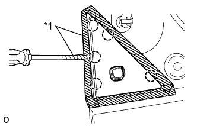
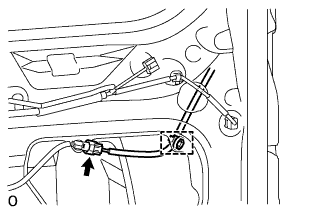
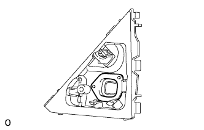

GLASS HATCH OPENER SWITCH > REMOVAL |
| 1. REMOVE LOWER BACK DOOR OUTSIDE GARNISH MOULDING LH |
|  |
Using a screwdriver, detach the 5 claws and remove the outside garnish moulding.
| *1 | Protective Tape |
| 2. REMOVE LOWER BACK DOOR OUTSIDE GARNISH SUB-ASSEMBLY LH |
|  |
Disconnect the connector and detach the clamp.
Remove the screw.
Detach the double-sided tape.
Using a screwdriver, detach the 5 claws and remove the outside garnish.

| *1 | Protective Tape | *2 | Double-sided Tape |
| 3. REMOVE GLASS HATCH OPENER SWITCH ASSEMBLY |
 |
Remove the screw and opener switch.
| 4. REMOVE SWITCH COVER |
|  |
Remove the switch cover.